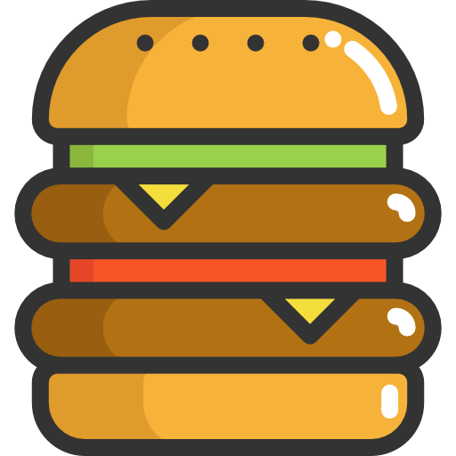
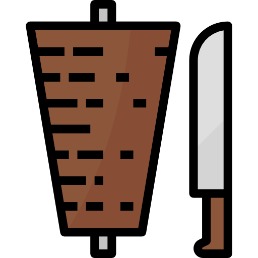
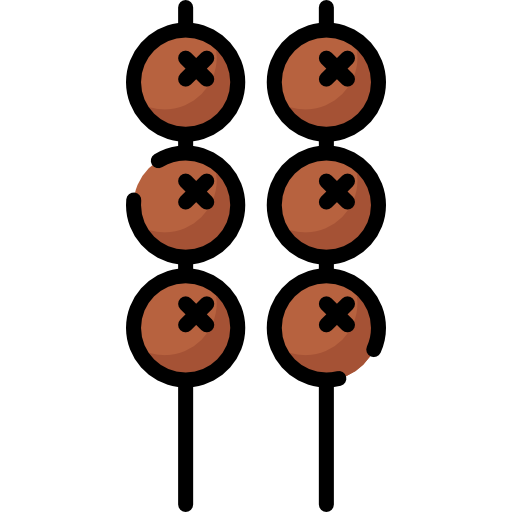

Bento menus are named for the bento box appearance of both the icon and the menus contained within. Bento icons show
squares arranged in a three-by-three grid to reflect the organization of the items in these menus. Items are organized in a grid
with icons for each. This type of menu saves some space, but requires some specific dimensions because of the more square nature
of the organization grid. This type of menu is used less often than hamburger style menus in mobile, but can be seen a bit more
in desktop and tablet applications where space is not as limited.
Döner menus
The Döner menu is named for the inverted cone-shaped icon, reminiscent of döner
kebab, which involves cooking meat on a vertical rotisserie next to a heating element and shaving
off slices as the meat cooks.
The icon itself is used to indicate a filter; similar to a hamburger menu, the lines
indicate a list, and the inverted cone shape indicates a shrinking set of information. These menus are
utilized in mobile, tablet, and desktop sizes as they are not used specifically to save space.
What's on the menu?



Hamburger Menus
Hamburger menus are named for the buttons that activate them, which are themselves named because of their shape's similarity to
the food, are a way of hiding a menu while saving space in a crowded interface. The resemblance was likely unintentional, borne of
the need for an icon to represent a list of menu items.
The hamburger icon originated for a different purpose, but was adapted when the need arose for
saving space on newer, smaller screens while maintaining the same amount of information.
Kebab Menus
Kebab menu icons are named for the resemblance to what is colloquially referred to as
a kebab, but really refers to any skewered meat. This icon is similar to the hamburger icon, in that it
was introduced to save space in increasingly smaller screens. Unlike the hamburger icon, however, which
indicates a list of options, this icon represents additional options than what is being shown, but
that are not as essential and thus can be hidden until they are needed. Kebab icons are generally
considered interchangeable with "meatball" icons, which also utilize three dots, except aligned horizontally
rather than vertically.